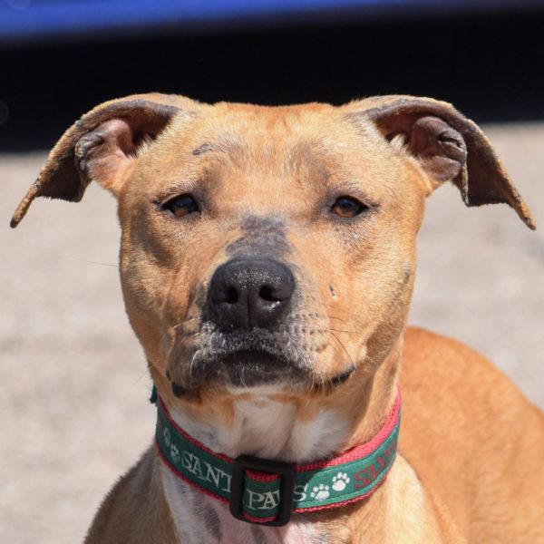
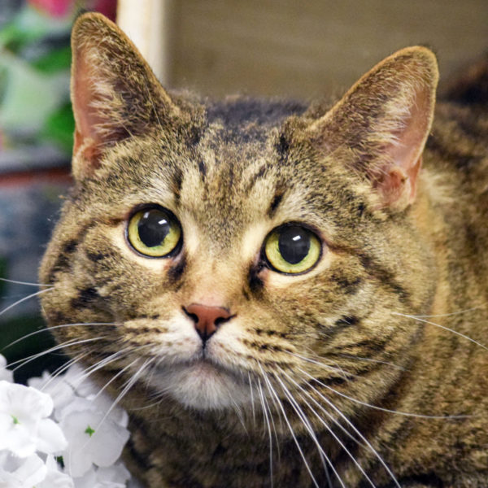

CUDDLE ANIMAL HOUSE SHELTER
Finding forever homes for Animals since 2005
About Us
Cuddle Animal House Shelter is a non profit, no-kill shelter that rescues and cares for homeless pets. Our goal is to find loving, stable homes in our care.Ready to adopt or fostr your new best friend? Start looking!
HERE ARE SOME OF THE REASONS WE RESCUE PETS
- Abuse, neglect or abandonment
- Owners whose time, income or situation changes
- Animals schedules for euthanasia at other clinics
Once rehabilitated and ready, they are carefully matched with homes for adoption or foster care.
THIS IS A LIST OF SOME OF OUR PETS UP FOR ADOPTION
Arthur

About Arthur
- Breed: Americal german shepherd/ Bulldog
- Age: 3 years
- Weight: 22 pounds
- Gender: Male
- Good with Dogs?: yes
- Adoption Donation: $450
Bob

About Bob
- Breed: Tabby/Domestic Short hair
- Age: 3years
- Temperament: Very Sweet! Loves to play and watch out the windows.Good for ear cleanings,nail trims,going to the vet and a good brushing
- Good with cats?: Yes
- Good with kids?: Yes
- Adoption Donation: $167
Clara
About Clara
- Breed: White/Domestic Short hair
- Age: 3years
- Temperament: Very Sweet! Loves to play and watch out the windows.Good for ear cleanings,nail trims,going to the vet and a good brushing
- Good with cats?: Yes
- Good with kids?: Yes
- Adoption Donation: $180
On trying to let us know how to improve, to make donations and let us know how to help you get a pet
Contact Us